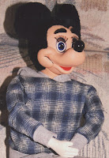
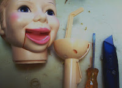

Rubber Band Replacement for Mickey
4/4/2011
{kind=link}

Question: I have two 1973 Horsman Mickey Mouse Ventriloquist Figures. Their rubber band is broken and I am unable to make their mouth move anymore. Is there a simple way to replace the rubber band inside the head ? Is it possible to convert into using spring instead of rubber band ?
* * * * *
{kind=link}

Answer: Both Mickey and Simon Sez (right) were made by Horsman. And they both had the plastic headpost with trigger control. There's not an EASY way to replace the rubber band on the mouth of the Mickey or Simon doll. I've fixed several, but I have always removed the plastic head post to do it. That's not easy either. I use a Xacto knife to split the upper part of the headpost at the seams so the upper part of the post can be spread apart and removed from the neck. The rubber band as originally mounted stretches from the wire ring on the rear of the mouth unit, downward to slip around one of the round plastic horizontal rods inside the headpost. With a bit of creativity, I imagine a spring could be used in place of the rubber band. Once repaired and returned to position, just a couple drops of super glue will hold it all in place. Use the super glue carefully and sparingly. Keep it away from any moving parts for obvious reasons.